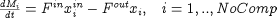

We have seen how array equations can be written in an implicit manner by exploiting the array expression capability of gPROMS. An alternative is to write array equations explicitly using a FOR construct that is similar to that provided by most high-level programming languages. Thus, consider the equation describing the conservation of component i in a multi-component buffer tank. This can be written mathematically as:

In gPROMS, this can be written in two completely equivalent ways, namely implicitly, in the form:
$M = Fin*Xin - Fout*X ;
or explicitly, in the form:
FOR i := 1 TO NoComp DO $M(i) = Fin*Xin(i) - Fout*X(i) ; END
The above are completely equivalent: which one you use depends entirely on your preference. However, situations do exist in which the required equations cannot be described via implicit declaration, and the use of explicit FOR constructs is essential.
The counter of a FOR construct (e.g. i in the above example) is an integer quantity that may be referenced only
by equations enclosed within the construct. The range of this counter must be specified in terms of any arithmetic expressions involving integer
constants, integer Parameters and/or integer arithmetic operators. Moreover, a step increment may be specified. For instance,
FOR i := NoComp+1 TO 2*NoComp STEP 2 DO ... END
will start by assign i a values of NoComp+1 and then will increment it by 2 until it
exceeds 2*NoComp. If no increment is specified, its value defaults to 1. A FOR construct may enclose an arbitrary
number of equations of any type -- including other For constructs. This allows nesting of For constructs to arbitrary depth; in such
cases:
each FOR construct must use a different name for its counter variable;
any expression that appears within each For construct (including those defining its range and increment) may involve the counters of any enclosing For constructs.